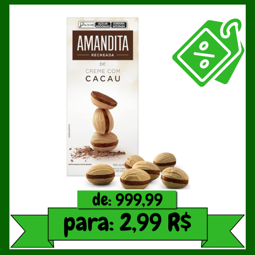
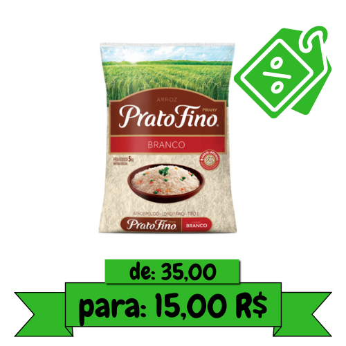
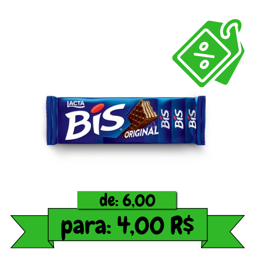
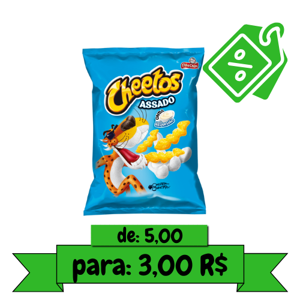
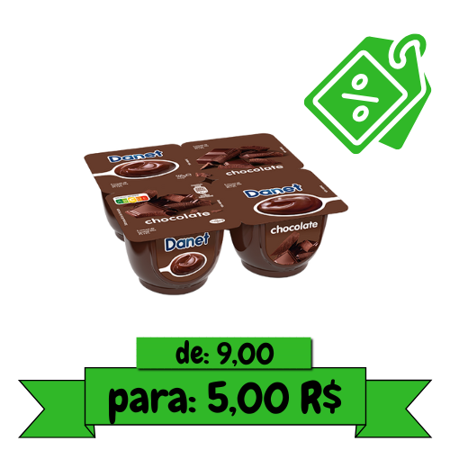
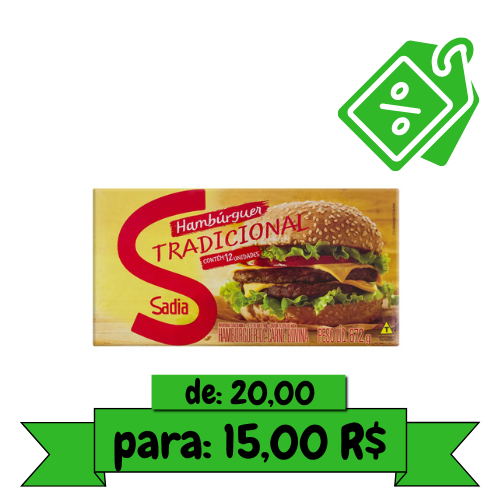
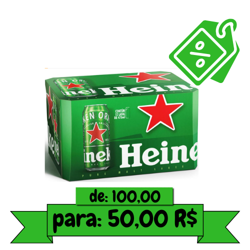

© Tufo Alimentos
Sabor que Encanta, Qualidade que Alimenta!
Ofertas Do Dia.







Sobre a Tufos Alimentos
Bem-vindo ao Tufo Alimentos!
No coração de cada cozinha, há uma história de sabor, tradição e qualidade.
E é nesse espírito que o Tufo Alimentos traz para você uma experiência gastronômica que transcende o comum.
Desde a sua fundação em 1995, temos dedicado nossos esforços para fornecer aos nossos clientes os melhores produtos alimentícios, trazendo frescor, sabor e nutrição para suas mesas.
Nossa jornada começou modestamente, com um pequeno mercado local comprometido em oferecer produtos frescos e atendimento excepcional. Ao longo dos anos, cresceu e evoluiu para se tornar uma referência em qualidade e variedade de alimentos em nossa comunidade.
Hoje, estamos orgulhosos de ser reconhecidos como um destino confiável para os amantes da gastronomia e da culinária.
O que nos diferencia é a nossa paixão pela excelência. Cada item em nossas prateleiras é cuidadosamente selecionado, proveniente de produtores locais e fornecedores confiáveis, garantindo que apenas o melhor chegue até você.
Nossa equipe dedicada trabalha incansavelmente para garantir que sua experiência de compra seja sempre satisfatória, oferecendo um atendimento personalizado e uma atmosfera acolhedora em nossa loja.